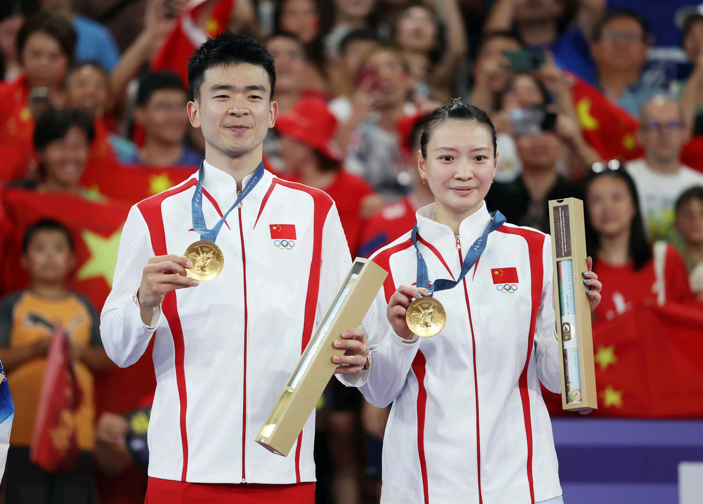
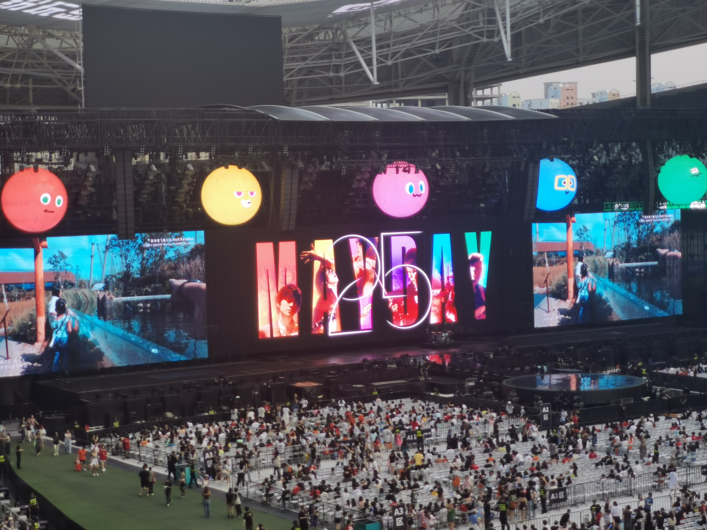

Zichen ZHAO's Website
Self Introduction
Hi, my name is Zichen ZHAO (赵子辰). I am a junior student in School of Computer Science (SCS) at Shanghai Jiao Tong University (SJTU, 上海交通大学).
I was born and raised in Shanghai, the biggest and most modern city in China. My family is originally from Hunan Province, the paradise of spicy food. Welcome to visit Hunan and taste its delicious food!
I major in information security and minor in economics. Currently I am interested in program analysis and software security. Feel free to contact me!
Personal Life
Badminton
I learned how to play badminton in primary school. Apart from playing on court, I also watch badminton matches.
Here are my favourite players — guess who they are!

Zheng Siwei and Huang Yaqiong! They are the mixed doubles champions at the Paris Olympics. In China we simply call them "Ya-Si" (雅思), which means "IELTS" in Chinese!
Music
I like playing the piano in my spare time. I prefer classical music and pop music, Sergei Rachmaninoff and Mayday for example.
I enjoy going to concerts!

I went to the Mayday concert in Shanghai in September 2025! Their live shows are really impressive and the atmosphere is electrifying!
Honors & Awards
SJTU “Premier Cybersecurity” Scholarship
上海交通大学“一流网安”奖学金
December 2024
I am the only sophomore who won the 6,000 CNY scholarship!
SJTU Class C Excellence Scholarship
上海交通大学C等奖学金
December 2024
This scholarship recognizes students who have demonstrated exceptional academic performance and a commitment to excellence.
Electrical & Electronic Engineering Innovation Competition for College Students
全国大学生电子电气工程创新竞赛
July 2024
Our project "Design of a New Distributed Power Coordinated Controller" won the second prize!